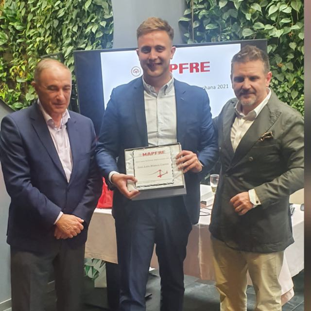

Jose Luis Blanco
Agente Exclusivo MAPFRE | Especialista en Gerencia de Riesgos
Con una sólida trayectoria en el sector asegurador, Jose Luis Blanco lidera la oficina de Seguros Zurbano con un enfoque centrado en la excelencia y la ética profesional. Su carrera está marcada por el compromiso directo con el cliente, habiendo sido reconocido por MAPFRE por su capacidad técnica y su gestión impecable.
Como profesional del barrio de Chamberí, Jose Luis entiende que una PYME o una familia no necesitan solo una póliza, sino un consultor de confianza que esté presente cuando surgen los imprevistos. Su especialización le permite ofrecer una visión 360° para asegurar el patrimonio de quienes confían en su gestión.
"Mi filosofía de trabajo es la transparencia. En esta oficina, cada cliente recibe un asesoramiento técnico y personalizado."
Agente Certificado
Asesoría Local